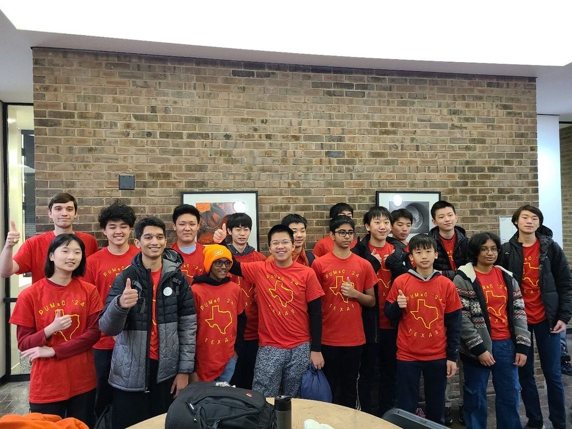
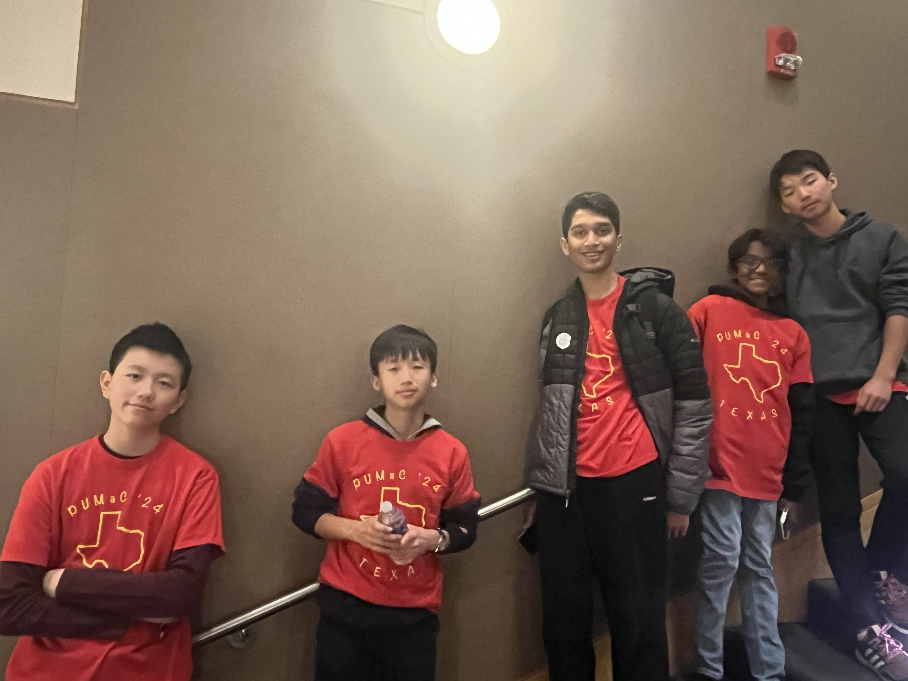

The Texas PUMaC 2024 Team
Texas Ramanujan
Darren Han
Guanjie (Tony) Lu
Tarun Rapaka
Andrew Shen (Captain)
Alexander Sun
Vincent Wang
Leo Yu
Raymond Zhao
Texas Hardy
Amogh Akella
Jiya Dani
Jason Li
Xinyi (Sophie) Li
Nathan Liu
Krithik Manoharan
Le Yi (Drake) Tan
Jerry Zhang (Captain)
Coaches and organizers
Matthew Kroesche
Individual results (A Division)
Vincent Wang placed 4th individually, 4th in Combinatorics, and 5th in Number Theory.
Darren Han placed 16th individually, 3rd in Number Theory, and 14th in Algebra.
Krithik Manoharan placed 18th individually, 9th in Algebra, and 27th in Geometry.
Tarun Rapaka placed 28th individually and 3rd in Geometry.
Nathan Liu placed 38th individually and 10th in Number Theory.
Leo Yu placed 13th in Algebra and 22nd in Geometry.
Amogh Akella placed 15th in Combinatorics.
Raymond Zhao placed 22nd in Geometry and 24th in Combinatorics.
Andrew Shen placed 27th in Geometry.
Alexander Sun placed 28th in Number Theory.
Team results
Texas Ramanujan placed 4th overall, 10th in Team Round, and 8th in Power Round.
Texas Hardy placed 9th overall, 11th in Team Round, and 9th in Power Round.
Team photo

Individual finalists

(Back to Main Page)